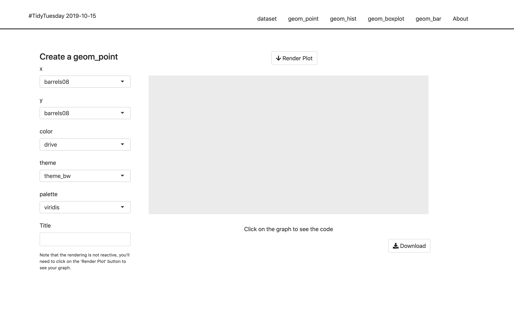
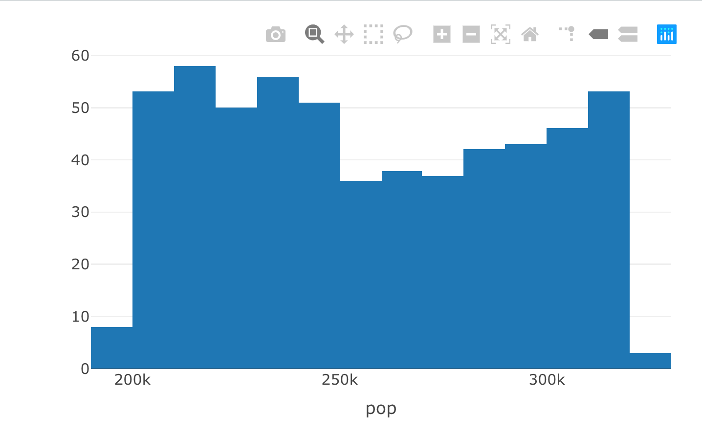
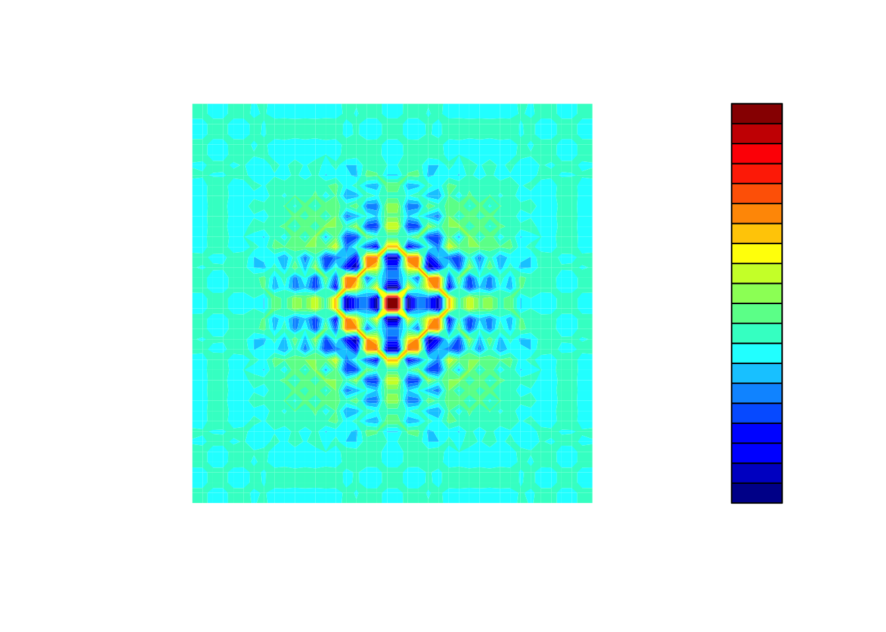
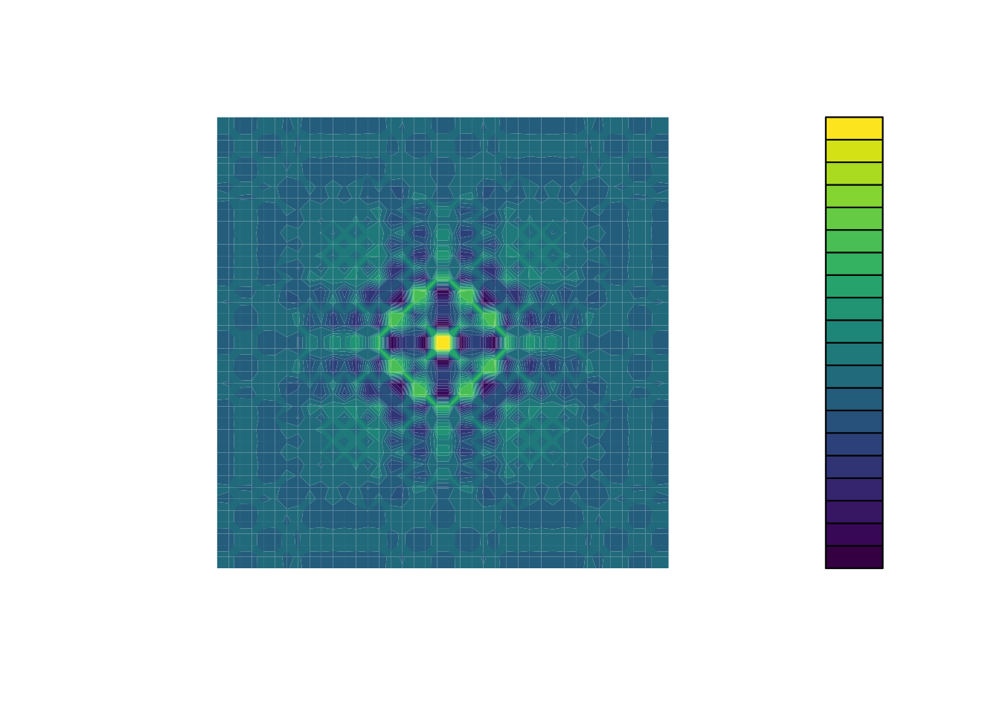
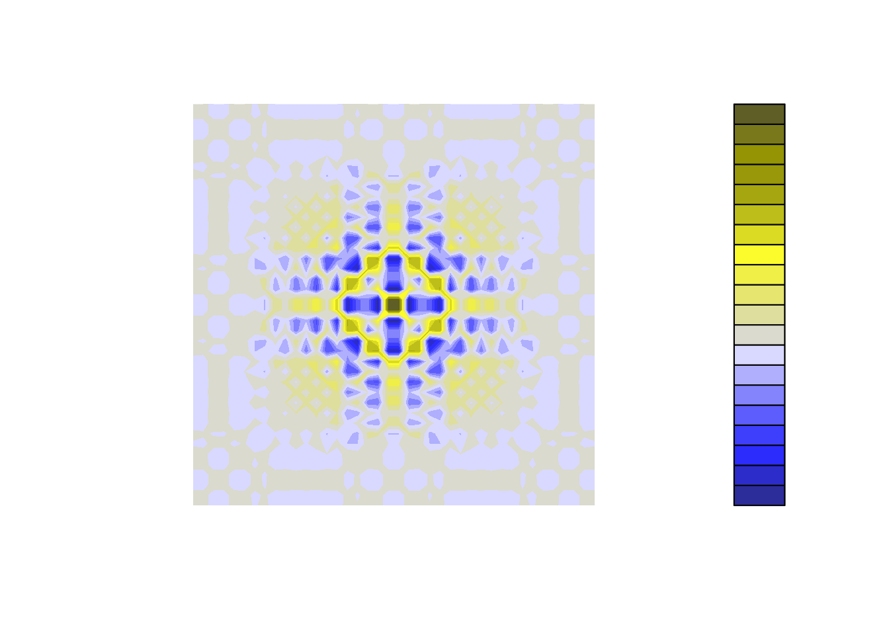
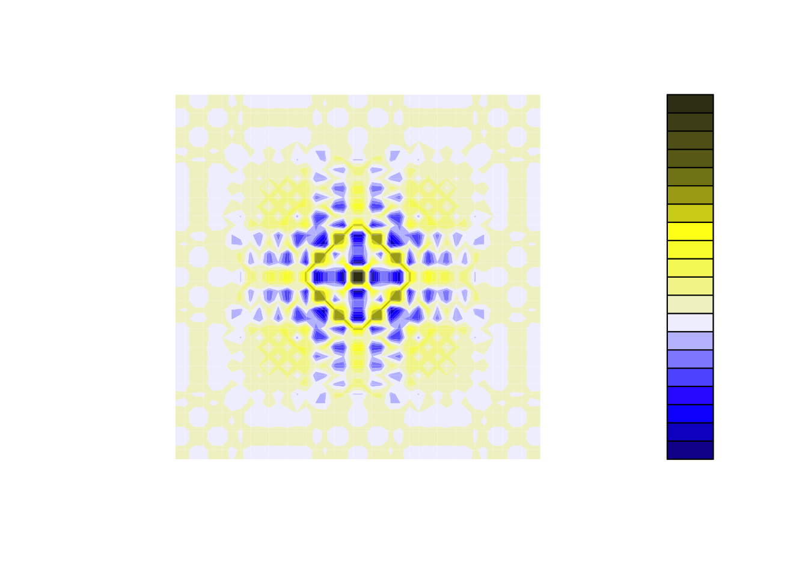
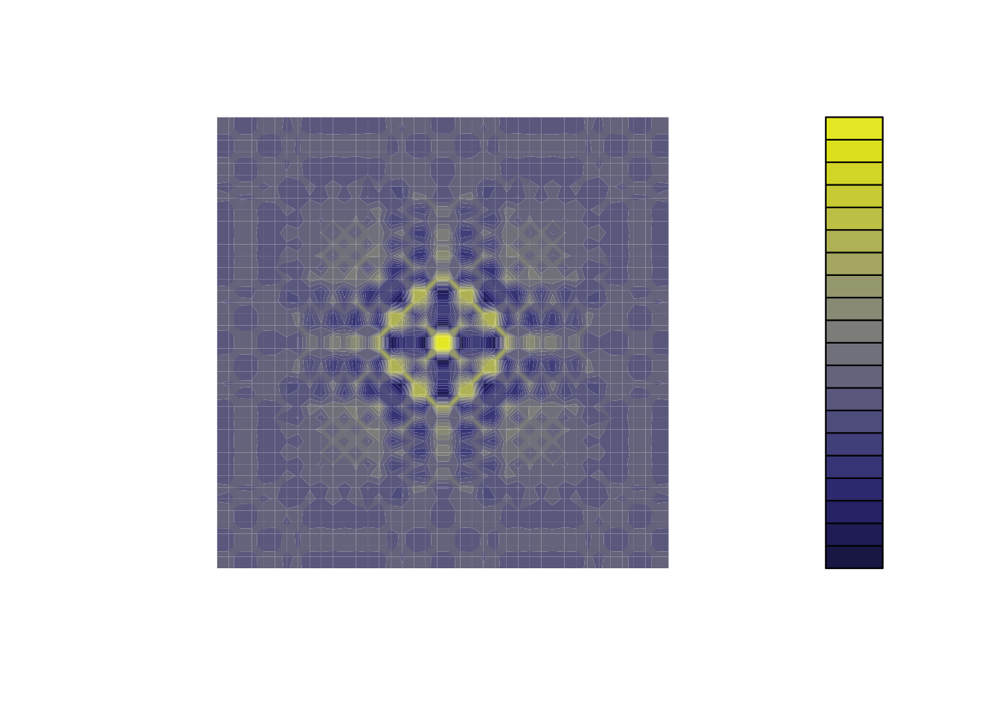
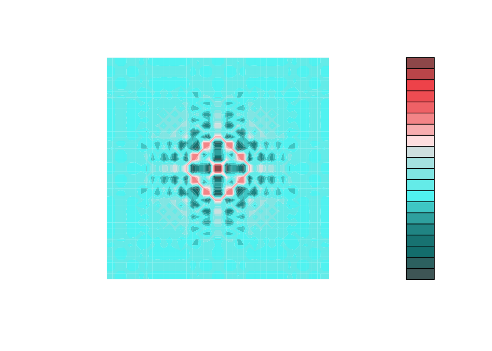
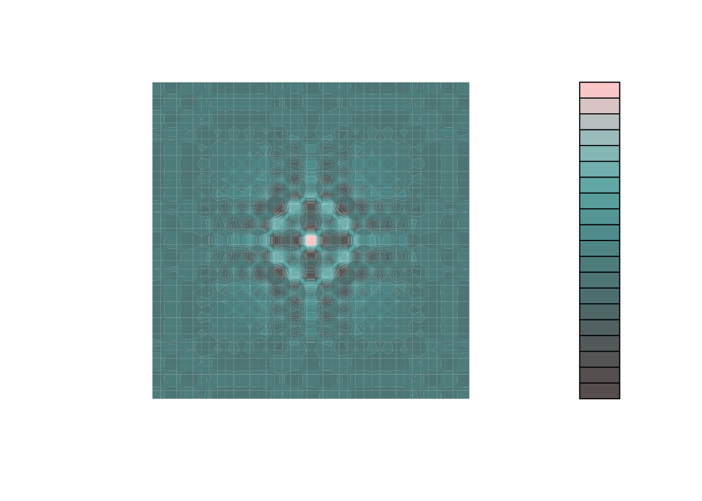
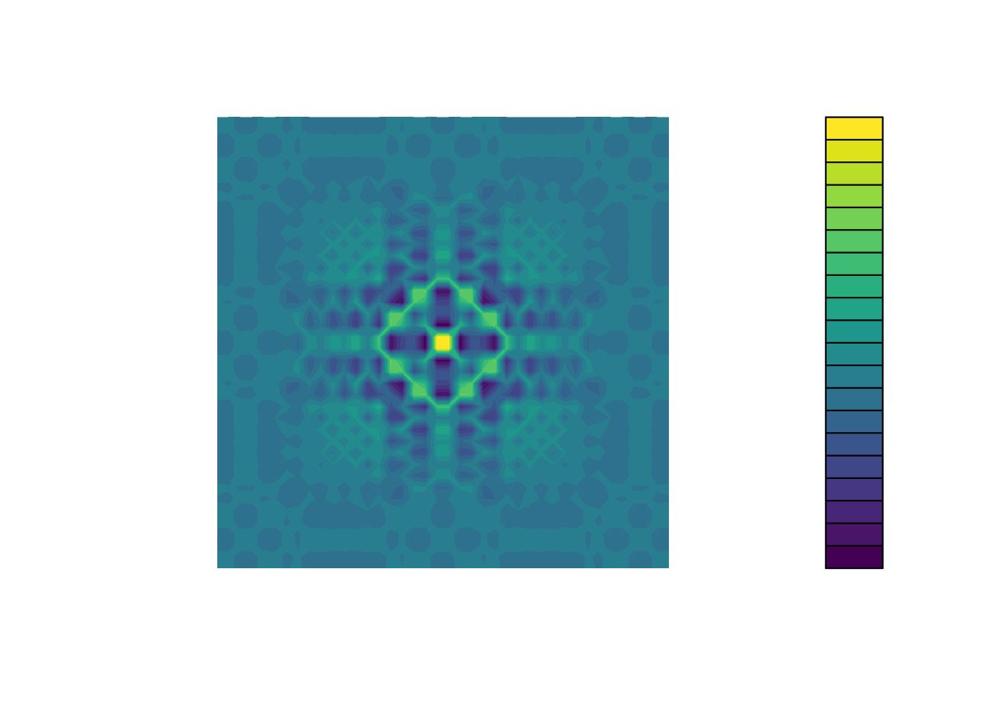

Chapter 6 UX Matters
Let’s state the truth: no matter how complex and innovative your back-end is, your application is bad if your User Experience (UX) is bad. That’s the hard truth.
We have a natural tendency, as R-coders, to be focused on the back-end, i.e the server part of the application21. Which is perfectly normal—chances are you did not come to R to design front-ends22.
However, if people can not understand how to use your application, or if your application front-end does not work at all, your application is not successful, no matter how innovative and incredible the computation algorithms in the back-end are.
As you are building a complex, production-grade Shiny application, do not under-estimate the necessity for a successful front-end: it is after all the first thing (and probably the only thing) that the end-users of your web application will see, and our natural taste, as R developers, for back-end/server logic can play against us in the long run: by neglecting the UI and the UX, you will make your application less likely to be adopted among your users ; which is a good way to fail your application project.
6.1 Simplicity is Gold
“Simplify, then add lightness”
Colin Chapman CBE, Founder of Lotus Cars
Aiming for simplicity is a hard thing, but some rules will help you build a better UX, paving the way for a successful application.
There are mainly two contexts where you will be building a web app with R: for professional use (i.e people will rely on this app to do their job), or for fun (i.e people will just use the app as a distraction)
But both cases have something in common: people will want the app to be usable, and easily usable.
If people use your app in a professional context, they do not want to fight with your interface, read complex manuals, or lose time understanding what they are supposed to do and how they are supposed to use your application. In other words, they want an efficient tool: something that, beyond being accurate, is easy to grasp. In a professional context, when it comes to “Business applications”, remember that quicker you understand the interface, the better the user experience. Think about all the professional applications and software that you have been ranting about during your professional life, all these cranky user interfaces you have not understand and/or you need to relearn every time you use them. You do not want your app to be one of these applications.
And on the other hand, if users open your app for fun, they are not going to fight against your application: they are just going to give up if the app is too complex to be used. Even a game has to appear easy to use when the users open it.
In this section, we will review two general principles: the “do not make me think” principle, which states that interfaces should be as self-explanatory as possible, and the “Rule of least surprise”, stating that elements should behave the way they are commonly expected to behave. These two rules aim at solving one issue: the bigger the cognitive load of your app, the harder it will be for the end-user to use it on a daily basis.
6.1.1 How we read the web: scanning content
One big lie we tell ourselves as developer is that end-user will use the app the way we designed it to be used (and to be honest, this is true of any software). We love to think that when faced to our app, the users will carefully read the instructions, make a rational decision based on careful examination of the inputs, before doing what we expect them to do. But the harsh truth is that it is not how what happens.
First of all, user rarely read carefully all the instructions: they scan, and perform the first action that more or less match what they need to do, i.e they satisfice (a portmanteau of satisfy and suffice). Navigating the web, users try to optimize their decision but not by making the decision that would be “optimal”, but by doing the first that will satisfy a sufficient amount of relevance. They are behaving like that for a lot of reason, but notably because they want to be as quick as possible on the web, and because the cost of being wrong is most of the time very low: even if you make the wrong decision on a website, chances are that you are just a “return” or “cancel” button away from canceling your last action.

For example, let’s have a look at the user interface of hexmake, a Shiny app for building hex stickers, available at https://connect.thinkr.fr/hexmake/
[](img/hexmake.png
What will be your reading pattern for this application? What is the first thing you will do when using this app?
There is an inherent logic in the application: each sub-menu is designed to handle one specific part of your sticker. The last-but-two menu is the one used to download the sticker, and the last one the menu to open the “how to” of the app. When opening this app, will your fist move be to open the “How to”? Will you open all the sub-menu and select the most “logical” one to start with? Chances are that reading this line, you think you will do that. But in reality, we behave less rationally that we’d like to think. What we most of the time do is click on the first thing that matches what we are here to do. For example, most of the time we will first change the package name, or upload an image, before even opening the about section of this app.
Once user have scanned the page, they perform the first action that seems reasonable.
Or as coined in “Rational Choice and the Structure of the Environment” by Herbert A. Simon, “organisms adapt well enough to “satisfice”; they do not, in general, “optimize.””.
In other words, “As soon as we find a link that seems like it might lead to what we’re looking for, there’s a very good chance that we’ll click it” (‘Don’t make me think’, Steve Krug).
What that also means is that user might perform what you’d expect to be “irrational” choices. As they are scanning your application, they might do something unexpected, or use a part of your app in a way that you would not expect it to be used. For example, if you are creating an app that is designed to take as input data that has to be filled following a specific form, you need to check that this requirement is fulfill, or you will end up debugging errors on uncommon entries.
This is a pretty common thing about apps and about software in general: you have to expect users to use your product in ways you would not have expect, in way that might seem absurd to you. This is what is called “defensive programming”: you prevent the application to be used in an unexpected way, and instead of relying on the end user being rational with their choice, we “defend” our function from unexpected inputs.
For example, consider this small app:
library(shiny)
ui <- function(request){
tagList(
selectInput(
"species",
"Choose one or more species",
choices = unique(iris$Species),
multiple = TRUE,
selected = unique(iris$Species)[1]
),
plotOutput("plt")
)
}
server <- function(
input,
output,
session
){
output$plt <- renderPlot({
plot(
iris[ iris$Species %in% input$species, ]
)
})
}
shinyApp(ui, server)What is wrong with this app?
Probably nothing from a developer point of view: there is a label telling that one should select one or more element from the dropdown, and then something is plotted below.
Pretty standard.
But what happen if the dropdown is empty?
Our first conception would be that this would never happen, as it is explicitly specified that there should be one or more elements selected.
In fact, chances are that even with this label, users will eventually end up with an empty selectInput(), leading to the printing of a red error where the plot should be.
And here, we are lucky, the error only prevents the plot from being displayed: other errors would make the application crash.
What should we do? Adopt a defensive programming mindset. Every time you create interactive elements, inputs and outputs, or things the user might interact with, ask yourself: “what if [that crazy thing] happens? How do I handle the case where the minimal viable requirements for my app are not met?”. And in fact, you should not be focusing on that only for the user side: the back-end should also be examined for potential unexpected behaviors. For example, if your Shiny app relies on a database connection, you should check gracefully that the connection is possible, and if it is not, send a message to your user that the database is not reachable, and that they should either restart the app or come back in a few minutes.
In fact, this is a crucial thing when it comes to making your app successful: you should always fail gracefully and informatively. That means that when your R code fails, the whole app should not fail. If the R code fails for some reason, the user should either get nothing back or an informative bug message, not be faced with a grayish version of the application.
Because of the way Shiny is designed, a lot of R errors will make the Shiny app fail completely. If you have not think about this upfront, that means that a user might use the app for say 10 minutes, do a series of specifications, enter parameters and data, and at some point the app completely crashes. Then the user has to restart from scratches, because there is no native way, from there, to restart from where the app has crashed. This is a very important thing to keep in mind when building Shiny app: once the app has failed, there is no easy way to natively get it back to the moment just before it crashed, meaning that your users might lose a significant amount of time they have spent configuring the app.
So, one good practice: try, as much as possible, to wrap all server calls in some form of try-catch pattern.
That way, you can for example send a notification to the user if the process fails, either using {shiny} notification function, an external package like {shinyalert}, or a custom JavaScript alert like notify.js.
Here is a pseudo-code pattern for this using the {attempt} package:
6.1.2 A self-evident app (or at least self-explanatory)
One of the goal of a usable app is to make it self-evident, and fall back to a self explanatory app if the first option is too complex a goal. What is the difference between the two?
self-evident : “Not needing to be demonstrated or explained; obvious.” lexico.com
self-explanatory : “Easily understood; not needing explanation.” https://www.lexico.com/en/definition/self_explanatory
So the first is that the app is designed in such a way that there is no learning curve to using it. A self-explanatory app has a small learning curve, but it is designed in a way that will make the user understand it in a matter of seconds.
Let’s for example get back to our {tidytuesday201942} application available at connect.thinkr.fr/tidytuesday201942
By itself, this application is not self-evident: you need to have a series of background knowledge before understanding what this application was designed for.
For example, you might need to have a vague sense of what tidytuesday is.
If you do not, you will have to read the home text, which will help you understand what this is.
Then, if we have a look at the menu elements, we see that these are a series of functions from {ggplot2}: without any background about the package, you might find it difficult understanding what this app actually does.
Yet, if you want to understand what this app is designed for, you will find enough information either on the home page or in the About section, with external links if needed.
And of course, when building apps, context matters.
The {tidytuesday201942} app is one that has been developed in the context of tidytuesday, an online weekly event for learning data analysis, mainly through the use of {tidyverse} packages.
So there is a good chance visitors of the app will already know what is {ggplot2} when visiting the app.
6.1.2.1 The “Rule of Least Surprise”
Also know as “Principle of Least Astonishment.”
Rule of Least Surprise: In interface design, always do the least surprising thing.
When we are browsing the web, we have a series of pre-conception about what things are and what they do. For example, we expect an underline text to be clickable: so there is a good chance that if you use underline text inside your app, the user will try to click on it. Usually, the link is also colored differently from the rest of the text. Same goes for the pointer of the mouse, which usually switch from an arrow to a small hand with a finger up. A lot of other conventions exist on the web, and you should endeavor to follow them: a clickable link should have at least one of the properties we just described—and if it is neither underlined nor colored nor changing the pointer when it is hovered, chances are that the user will not click on it.
Just imagine for a second if our “Download” button in the {tidytuesday201942} app did not actually download the graph you had generated.
Even more, imagine if this button did not download the graph but something else.
How would you feel about this experience?
And it is not just about links: almost every visual elements on a web page is surrounded by conventions. Buttons should have borders. Links should appear clickable. Bigger texts are headers, the bigger the more important. Elements “visually nested” are related. Etc.
Weirdly enough, that is an easy thing to spot when we arrive on a webpage/an app: it can either feel “natural”, or you can immediately see that something is off. The hard thing is that it is something you spot when you are a new-comer: developing the app makes us so familiar with the app that we might miss when something is not used the way it is conventionally used23.
Let’s exemplify this with the “Render” button from the {tidytuesday201942} application.
This app is built on top of Bootstrap 4, which has no CSS class for {shiny} action button24.
Result: without any further CSS, the buttons do not come out as buttons, making it harder to decipher they are actually buttons.
Compare this native design:

To the one with a little bit of CSS (which is the one online):

Yes, it is subtle, yet the second version of the button is clearer to understand.
Least surprise is crucial to make the user experience a good one: users rarely think that if something is behaving unexpectedly on an app, it is because of the app: they will usually think it is their fault. Same goes for the application failing or behaving in an unexpected way: most users think they are “doing it wrong”, instead of blaming the designer of the software.
When users are astonished they usually assume that they have made a mistake; they are unlikely to realize that the page has astonished them. They are more likely to feel that they are at fault for not anticipating the page. Don’t take advantage of this; making users feel stupid is not endearing.
6.1.2.2 Think about the progression
If there is a progression in your app, you should have designed a clear pattern of moving forward. If you need to bring your user from step 1 to step 7, you need to guide them through the whole process, and it can be as simple as putting “Next” buttons on the bottom of each page.
Inside your app, this progression has to be clear, even more if step n+1 relies on the inputs from n. A good and simple way to do that is to hide elements at step n+1 until all the requirements are fulfilled at step n. Indeed, you can be sure that if step 2 relies on step 1 and you did not hide step 2 until you have everything you need, users will go to step 2 too soon.
Another way to help this readability is to ensure some kind of linear logic through the app: step 1, data upload, step 2, data cleaning, step 3, data visualization, step 4, exporting the report. And organized your application around this logic, from left to right / right to left, or from top to bottom.
Let’s compare {tidytuesday201942} to {hexmake} — one has a clear progression, {hexmake}, and has been designed as such: the upper menus design the stickers, and then once they are filled you can download them.
So there is a progression here, from top to bottom.
On the other hand, the {tidytuesday201942} does not have a real progression inside it: you can navigate from one tab to the other indifferently.
Hence there is no visual clues of progression on that app.
6.1.2.3 Inputs and errors
You’re the one developing the app, so of course you are conscious of all the inputs that are needed to complete a specific task. But your users might be new to the app, distracted while reading, they might not clearly understand what they are doing, maybe they do not really want to use your app but are forced to by their boss… Or maybe your app is a little bit hard to understand, so it is hard to know what to do at first.
When building your app, you should make sure that if an input is necessary, it is made clear inside the app that it is. One way to do this is simply by hiding UI elements that can not be used until all the necessary inputs are there: for example, if a plot fails at rendering unless you have provided a selection, do not try to render this plot unless the selection is done. If you are building a dashboard and tab 2 needs specific inputs from tab 1, then tab 3 specific inputs from tab 2, then be sure that tab 2 and 3 are not clickable/available until all the required inputs are filled. That way, you can help the user navigate through the app, by reducing the cognitive load of having to be sure that everything is correctly set-up: if it is not clickable, that is because something is missing.
And do this for all the elements in your app: for example with {hexmake}, we start with filled fields and an hex sticker which is ready, so that even if you start with the download part, the application would still work.
If we had chosen another pattern, such as making the user fill everything before being able to download, we would have needed to make downloading impossible until all fields are filled.
Another example from this application is the use of a MongoDB back-end to store the hex stickers: if the application is launched with with_mongo set to FALSE, the user will not see any buttons or field that refers to this options.
Think about all the time when you are ordering something on the internet, and need to fill specific fields before being able to click on the “Validate” button. Well, apply that approach to your app, that will prevent from unwanted mistakes.
Note that when using the golem::use_utils_ui() function, you will end with a script of UI tools, one being with_red_star, which adds a little red star at the end of the text you are entering, a common pattern for signifying that a field is mandatory:
Also, be generous when it comes to errors: it is rather frustrating for a user to see an app crash without any explanation about what went wrong. So, if something fails or behaves unexpectedly, error messages are a key feature to help your user get on the right track. And, at the same time, helping them correct themselves after an error is the best way to save you time answering angry emails!
Let’s refactor our app from before:
library(shiny)
ui <- function(request){
tagList(
selectInput(
"species",
"Choose one or more species",
choices = unique(iris$Species),
multiple = TRUE,
selected = unique(iris$Species)[1]
),
plotOutput("plt")
)
}
server <- function(
input,
output,
session
){
output$plt <- renderPlot({
if (length(input$species) == 0){
shiny::showNotification(
type = "error",
"Species can not be empty"
)
}
req(input$species)
plot(
iris[ iris$Species %in% input$species, ]
)
})
}
shinyApp(ui, server)Here, as a user, it is way easier to understand what went wrong: we have moved from a red error Error: need finite 'xlim' values to a pop-up explaining what went wrong in the way the user configured the app.
Perfect way to reduce your bug tracker incoming tickets!
This is a way to do it natively in Shiny, but note that you can also use the {shinyAlert} package to implement alerts.
It is also possible to build your own with a little bit of HTML, CSS and JavaScript, as shown on the notifyjsexample repo.
6.2 The danger of feature-creep
6.2.1 What is feature-creep?
Even more often (at least in the commercial software world) excessive complexity comes from project requirements that are based on the marketing fad of the month rather than the reality of what customers want or software can actually deliver. Many a good design has been smothered under marketing’s pile of “checklist features” — features that, often, no customer will ever use. And a vicious circle operates; the competition thinks it has to compete with chrome by adding more chrome. Pretty soon, massive bloat is the industry standard and everyone is using huge, buggy programs not even their developers can love.
Feature-creep is the process of adding features to the app that complexify the usage and the maintenance of the product, to the point that extreme feature-creep can lead to the product being entirely unusable and completely impossible to maintain. This movement always starts well-intentioned: easier navigation, more information, more visualizations, modifiable elements, and so on and so forth. It can come from project managers or dev, but users can also be responsible for asking more and more features in the app. If you are working in a context where the app specifications where designed by the users, or where you regularly meet the users for their feedback, they will most of the time be asking for more than what is efficiently implementable. Behind feature-creep, there is always a will to make the user experience better, but adding more and more things most of the time leads to a slower app, worst user experience, steeper learning curve, and all these bad states you do not want your app to be into.
Let’s take a rather common data analytic process: querying data, cleaning them, then plotting and summarizing them. And let’s say that we want to add to this a simple admin dashboard, that tracks what the users do in the app. It’s pretty tempting to think of this as a unity and throw the whole code base into one big project and hope for the best. But let’s decompose what we have got there for a minute: one task is querying and cleaning, one other is analyzing, and one other is administration. What is the point of having one big app for these three different tasks? Splitting this project into three smaller apps will keep you from having a large app which is harder to maintain, and that might be less performing. Indeed, if you put everything into the same app, you will have to add extra mechanisms to prevent the admin panel from loading if your user simply wants to go to the extraction step, and inversely: a user visiting the admin panel probably does not need the extraction and analysis back-end to be loaded when they simply want to browse the way other users have been using the app.
Or, as simply put in The Art of Unix Programing:
Rule of Parsimony: Write a big program only when it is clear by demonstration that nothing else will do.
But let’s focus on a smaller scope, and think about some things that can be thought of as feature-creeping your Shiny app.
6.2.2 Too much reactivity
When designing an app, you will be designing the way users will navigate through the app.
And most of the time, we design with the idea that the users will perform a “correct selection” pattern.
Something like: “The user will select 40 on the sliderInput() and the plot will update automatically.
Then the user will select the element they need in the selectInput() and the plot will update automatically”.
When in reality what will happen is: “The user will click on the slider, aim at 40 but will reach 45, then 37, then 42, before having the right amount of 40.
Then they will select something in the selectInput(), but chances are not the correct one from the first time.”
In real life usage, people make mistakes using the app, they do not move the sliders to the right place, so if the application reacts to their every moves, the experience using the app can be bad: in the example above, full reactivity means that you will get 4 “wrong” computations of the plot before getting it right.
In the {tidytuesday201942} application example, let’s imagine all the elements on the left automatically update the plot: especially in a context of a learning tool, reacting to any configuration change will launch a lot of useless computation, slowing the app in the long run, and making the user experience poorer.

So what should we do? Prevent ourselves from implementing “full reactivity”: instead, we will add a user input that will launch the computation. The simplest solution being a button so that the user signals to the application than now they are ready for the application to compute what they have parametrized.
6.2.3 Too much interactivity
Users love interactive elements. Maybe too much. If you present a user with a choice between a simple graph and a dynamic one, chances are that they will spontaneously go for the dynamic graph. Yet, dynamic is not always the solution, and for several reasons.
6.2.3.1 Speed
Dynamic elements are slower to render than fixed one.
Most of the time (if not always), rendering dynamic elements means that you will bind some external libraries, and maybe you will have to make R convert data from one format to another.
For example, rendering a {ggplot2} plot will be faster than rendering a ggplotly() plot, which has to convert from one format to another25.
That being said, not all visualization libraries are created equal, and choosing interactive visualization will not automatically lead to poorer performance: just keep in mind that this can happen.
6.2.3.2 Visual noise
More interactivity can lead to an element being less straightforward to understand.
Think for a minute about the {plotly} outputs.
They are awesome if you need this kind of interactivity, but for a common plot there might be too many things to understand.
Instead of focusing on the data, a lot of things show: buttons to zoom, to do selection, to export in png, and things like that.
With this kind of graphs, users might lose some time focusing on understanding what the buttons do and why they are there, instead of focusing on what matters: getting insights from the data.

Of course these features are awesome if you need them: exploring data interactively is a fundamental strength for an application when the context is right.
But if there is no solid reason for using an interactive table, use a standard HTML table.
In other words, do not make things interactive if there is no value in adding interactivity ; for example, if you have a small table and the users do not need to sort the table, filter, navigate in pages, DT::datatable() will add more visual noise than adding value to the application.
Adding interactivity widgets (in most cases) means adding visual elements to your original content: in other words, you are adding visual components that might distract the user from focusing on the content of the information.
To sum up, a good rule to live by is that you should not add a feature for the sake of adding a feature.
Less is more.
6.3 Web Accessibility
6.3.1 About Accessibility
When building professional Shiny applications, you have to keep in mind that, potentially, this app will be consume by a large audience. A large audience means that there is a chance that your app will be used by people with visual, mobility, or maybe cognitive disabilities26. Web Accessibility deals with the process of making the web available to people with disabilities.
The Web is fundamentally designed to work for all people, whatever their hardware, software, language, location, or ability. When the Web meets this goal, it is accessible to people with a diverse range of hearing, movement, sight, and cognitive ability.
When learning to code a web app through “canonical” courses, you will be introduced to web Accessibility very early. For example, you can learn about this straight from the first chapter of learn.freecodecamp.org. The first course, “Responsive Web Design Certification”, has a chapter on web accessibility just after the one on HTML and CSS.
6.3.2 Making your App Accessible
6.3.2.1 Hierarchy
Headers are not just there to make your application more stylish.
<h1> to <h6> are there so they can create a hierarchy inside your webpage: <h1> being more important (hierarchically speaking) than <h2>.
In a perfectly designed website, you would only have one header of level 1, a small amount of level 2 headers, more header of level 3, etc.
These elements are used by screen readers (devices used by blind people) to understand how the page is organized.
Hence, you should not rely on the header level for styling: do not use an <h1> because you need a larger title somewhere in your app.
If you want to increase the size of an header, use CSS, which we will see in an upcoming chapter.
6.3.2.4 Color choices
Color blindness is also a common impairment when it comes to web accessibility. And it is a rather common deficiency: according to colourblindawareness.org, “color (color) blindness (color vision deficiency, or CVD) affects approximately 1 in 12 men (8%) and 1 in 200 women in the world”.
Keeping in mind this prevalence of color blindness is even more important in the context of Shiny, where we are developing data science products, which most of the time include data visualization.
If designed wrong, dataviz can be unreadable for some specific type of color blindness.
That is why we recommend using the viridis palette, which has been created to be readable by the most common types of color blindness.
Here are for example a visualization through the lens of various type of color blindness:
# Function to generate the graph
with_palette <- function(palette) {
x <- y <- seq(-8 * pi, 8 * pi, len = 40)
r <- sqrt(outer(x^2, y^2, "+"))
filled.contour(cos(r^2) * exp(-r / (2 * pi)),
axes = FALSE,
color.palette = palette,
asp = 1
)
}With the jet.colors palette from {matlab}


Even without color-blindness, it’s already way more readable.
But let’s now use the {dichromat} package to simulate color blindness.
Attaching package: 'purrr'The following object is masked from 'package:magrittr':
set_names- Deutan with
jet.colorsandviridis


- Protan with
jet.colorsandviridis


- Tritan with
jet.colorsandviridis


par(mfrow=c(2,1))
with_palette(
compose(
partial(dichromat, type = "deutan"),
matlab::jet.colors
)
)
As you can see, the viridis palette always gives a more readable graph than the jet.colors one.
And, the plus side, it looks fantastic.
So do not hesitate to try and use it!
6.3.3 Evaluating your App Accessibility & Further reading
There are several tools on the web that can evaluate the accessibility of your webpage. You can also use a Google Chrome built-in tool called LightHouse (we will come back to it in the Testing chapter).
Evaluating Web Accessibility, with lengthy reports and advice about checking the accessibility of your website
https://www.webaccessibility.com/ has an online checker for webpage accessibility, and allows you to freely test 5 pages.

{hexmake} accessibility results
aka what happens in the server side of a Shiny App↩︎